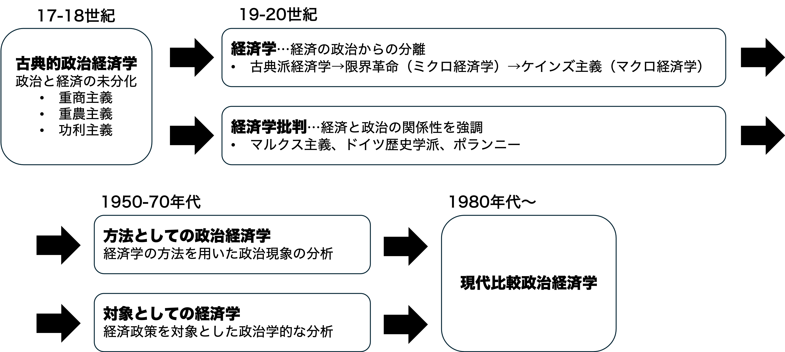

02/比較政治経済学の全体像
比較政治経済分析
今日の目次
- はじめに
- 政治と経済
- 財の種類と公共財
- 政治経済学の歴史
- 政治経済学のアプローチ
- まとめ
はじめに
先週のRP
TBD
本日の目的と到達目標
目的
政治と経済はそれぞれ何でどのような関係にあるのかを考察するとともに、比較政治経済学の全体像をつかむ。排除性と競合性に注目して財を分類するとともに、現代の比較政治経済学が誕生するまでの歴史的展開や3つのアプローチを概観する。
到達目標
- 価値の配分に着目して、政治と経済の違いを説明できる。
- 競合性と排除性に着目して、財の種類を4つに分類できる。
- 現代の政治経済学が成立するまでの歴史的過程を説明できる。
- 政治経済学の3つのアプローチ（アクター中心・制度中心・アイデア中心）をそれぞれ説明できる。
政治と経済
質問
2年生までの授業で、デイビッド・イーストンの政治の定義を習っていると思います。
その内容を思い出してください。
思い出せない場合は調べても構いません。
政治と経済の違い
比較政治経済学 (CPD)
政治と経済、国家と市場の関係を扱う分野
政治 (politics)
価値の権威的配分
- 例：徴税と再分配→強制力が伴う
経済 (economy)
価値の水平的配分
- 例：コンビニにおける買い物→市場における自発的交換

政治と経済の関係
- 公共財の提供
- フリーライダー問題による過小供給
- 強制力による解決
- 公平性の確保
- 生存権や社会権の保障
- 戦後の混合経済化
- 例：産業国有化、公共事業、規制、福祉
G7諸国の政府支出（対GDP比）
財の種類と公共財
財の2つの性質
- 排除性…対価を支払わない人を排除できること
- 競合性…ある人の消費が他の人の消費を妨げること
例：ペットボトルの水
- 排除性→対価を支払わないと入手不可
- 競合性→誰かが飲んだら他の人は消費不可
4種の財
| 排除可能 | 排除不能 | |
|---|---|---|
| 競合的 | 私的財 | 共有財 |
| 非競合的 | クラブ財 | 公共財 |
ワーク（わせポチ）…私的財・クラブ財・共有財・公共財の例をそれぞれ1つずつ考え、書き込んでみてください。
私的財以外は「（広義の）公共財」
- 「市場の失敗」…市場に任せると過小供給
- 政府による強制力＝価値の権威的配分＝政治が必要
オルソン『集合行為論』1
集合行為 (collective action)
ある集団の共通の利益を達成するための行動
フリーライダー問題 (free-rider problem)
合理的な個人は集合行為から逃れる誘因をもつ
例：国防サービス
- 国防サービスの提供は集合行為
- その利益は国民全員に恩恵
- 集合行為に協力しないのが合理的

政治経済学の歴史
質問
今日の事前学習課題（教科書）によると、次のテーマはどのような順番で出てきたでしょうか
- ケインズ主義
- 古典派経済学
- マルクス主義
- 古典的政治経済学
- 限界効用革命
- 現代政治経済学
政治経済学の歴史的展開

方法としての政治経済学
経済学の方法を用いた政治分析
- 経済学における公共選択論、社会的選択論
例：
- アローの不可能性定理…民主主義の下での多数決の失敗
- ダウンズ…合理的選択論に基づいた有権者と政治家の分析
- オルソン…合理的個人の集合行為の困難さ
対象としての政治経済学
経済政策を対象とした政治学的な分析
- 比較政治学の系譜→国ごとの違いに焦点
例：
- 比較福祉国家研究…国ごとの福祉政策のあり方の違い
- コーポラティズム論…労使関係をめぐる制度
- 資本主義の多様性論…企業行動をめぐる制度
政治経済学のアプローチ
現代比較政治経済学
1980年代以降に比較政治経済学が成立
- 方法としての政治経済学と対象としての政治経済学が合流
- 古典的政治経済学と対比して新政治経済学とも呼ぶ
3つのアプローチ
- アクター中心アプローチ
- 制度中心アプローチ
- アイデア中心アプローチ
アクター中心アプローチ
アクター（登場人物）に注目
→「アクターは何を考えて行動しているのか」
合理的選択論（Rational Choice Theory）
- 経済学における基本的な考え
- アクターは効用を最大化するべく行動と仮定
- 例：政治的景気循環（political business cycle）
- 現職の政府は再選を目指す
- 選挙前に財政支出増→選挙サイクルと景気循環の一致
制度中心アプローチ
古典的制度論⋯今ある制度（法律や慣習など）の記述に力点
新制度論（New Institutionalism）⋯制度を「アクターの行動を決めるルール」としてとらえる考え方
- 歴史的制度論⋯経路依存性への着目
- 例：福祉国家の経路依存性
- 合理的選択制度論⋯制度が利益・コストを規定
- 例：民主主義と経済成長
- 社会学的制度論⋯慣習や信念などの非公式な制度
- 例：アフリカ新興国における科学省
アイデア中心アプローチ
言説・信念・規範などに注目
- 政治エリート間の合意と市民の支持を調達
例：福祉国家縮減の政治学
- 1970年代以降の財政悪化→福祉削減が争点化
- デンマークの「フレキシキュリティ」（90年代）
- flexibility (柔軟性) + security (保障)
- 政府支出を給付から教育・労働訓練へと転換
まとめ
本日の目的と到達目標
目的
政治と経済はそれぞれ何でどのような関係にあるのかを考察するとともに、比較政治経済学の全体像をつかむ。排除性と競合性に注目して財を分類するとともに、現代の比較政治経済学が誕生するまでの歴史的展開や3つのアプローチを概観する。
到達目標
- 価値の配分に着目して、政治と経済の違いを説明できる。
- 競合性と排除性に着目して、財の種類を4つに分類できる。
- 現代の政治経済学が成立するまでの歴史的過程を説明できる。
- 政治経済学の3つのアプローチ（アクター中心・制度中心・アイデア中心）をそれぞれ説明できる。
次回までに
事前学習
- 教科書（第1章1-3）を読む。
事後学習
- 授業資料を見直し、目標到達をセルフチェック
- Moodle上でのリアクションペーパー入力（木曜日まで）
脚注
Olson, Mancur. 1965. The Logic of Collective Action: Public Goods and the Theory of Groups↩︎